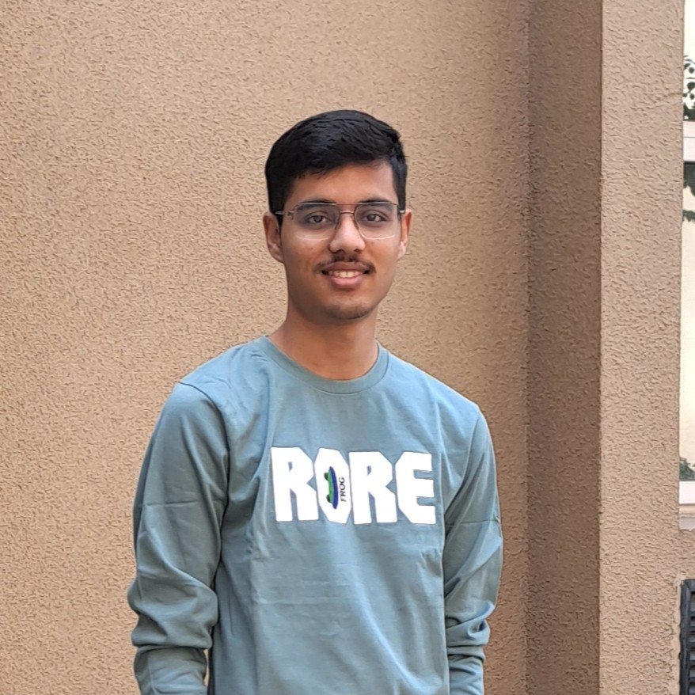

I am an undergraduate student in Artificial Intelligence at the Indian Institute of Technology Gandhinagar. Currently, I am a Visiting Undergraduate Researcher at California Institute of Technology (Caltech), advised by Dr. Ashish Mahabal, building an AI risk score to predict prostate cancer progression on active surveillance from 3D multimodal MRI. Previously, I was a Summer Undergraduate Research Fellow (SURF) at Caltech developing AI-readiness frameworks and Croissant-compliant data pipelines for medical imaging collections.
My research focuses on developing AI systems for medical imaging and visual understanding. I work on computer vision, generative models and vision-language models, with an emphasis on applying these methods to biomedical domain.

- [Aug 2026] Continuing as a Visiting Undergraduate Researcher at Caltech
- [May 2026] Started Caltech SURF fellowship.
- [Dec 2025] Awarded Diffusers MVP by Hugging Face for impactful open-source contributions.
- [Aug 2025] Received 2nd Prize at IITGN Undergraduate Research Showcase for Histotripsy bubble segmentation in ultrasound images.
- [Aug 2023] Started my journey at IIT Gandhinagar as an undergrad.
- Investigating vision-language models for answering clinically grounded questions about abdominal 3D CT scans.
- Developed and validated a quantitative ten-dimension framework to assess AI-readiness of medical datasets, applied it over 10 cancer collections, and identified recurring gaps in label fidelity and operational readiness.
- Developed pipelines transforming multi-modal Early Detection Research Network (EDRN) cancer datasets into Croissant-compliant, AI-ready resources for large-scale machine learning applications.
- Created tutorial notebooks demonstrating exploratory ML workflows on AI-ready medical datasets.
- Investigated whether injecting lightweight semantic (DINOv3) and structural (PiDiNet) guidance directly into a frozen SDXL diffusion prior could eliminate the need for disjoint pre-cleaning networks in blind image restoration, training on 30K+ images across multiple real-world datasets.
- Designed a two-phase training regimen consisting of coarse structural alignment via pixel-space regression at high-noise timesteps, followed by perceptual and semantic-similarity refinement at low-noise timesteps.
- Discovered that continuous low-quality latent injection anchors the diffusion prior to the input, and formulated a Restoration Sampling Strategy (RSS) that thresholds this injection across the sampling trajectory achieving an SSIM of 0.50 under compound degradation.
- Investigated whether modern segmentation architectures and a combined Dice-Focal loss could resolve a known early-stage detection failure in ultrasound-guided histotripsy monitoring, benchmarking four architectures against an established ResNet-18 baseline.
- Introduced a Combined Dice-Focal Loss and a pulse-aware weighted sampler to address class imbalance from sparse early-stage bubble clouds, improving mean IoU from 0.72 to 0.84 over the baseline.
- Found EfficientNet-B0 U-Net best suited for real-time deployment (7.9M parameters, 13.5ms inference) and DeepLabV3 best for temporal tracking fidelity (Pearson R = 0.92), revealing an accuracy-versus-tracking trade-off.
- Contributed to the development of SARTHI, a domain-adapted agricultural advisory LLM fine-tuned from Gemma-3-27B-IT using LoRA Supervised Fine-tuning across 16×H100 GPUs on a 220K-sample synthetic chain-of-thought dataset for taxonomy-driven agronomic reasoning.
- Developed LitGPT-to-HuggingFace conversion tools for standard serving stacks, indexed a 35GB+ continual pretraining corpus, and experimented with prompting techniques for structured reasoning.
- Contributed FLUX.2 Klein inpaint pipeline, resolved critical hardware compatibility and inference bugs across multiple generation pipelines such as FLUX, Kandinsky, and Cosmos.
- Awarded the Diffusers MVP title by Hugging Face for impactful open-source contributions.
- Resolved generation and export bugs related to RoPE KV cache, distributed serving, and checkpoint conversion.
- Engineered a lightweight CLIP model pairing ViT-S/16 and ResNet-101 vision models with a RoBERTa text encoder fine-tuned on Flickr30K dataset to learn joint visual-semantic embeddings.
- Achieved an 83.8% Recall@10 in image-to-text retrieval, matching the zero-shot OpenAI CLIP baseline.
- Engineered a scalable graph-streaming library implementing linear sketches, Disjoint set union-based connectivity, sampling, and randomized algorithms for large-scale graph analytics.
- Implemented and benchmarked Count-Min/Count Sketches and streaming graph algorithms on real-world DBLP and Enron graphs, achieving 2.95K edges/s with Count-Min Sketch at only 0.05 MB peak memory and reducing connectivity runtime by 59% and memory by 81% compared to NetworkX baseline.
- Developed and evaluated streaming optimizations including k-skeleton certificates, cut sparsification, greedy weighted matching, and shortcut-based random walks while processing at 1.2–3.0M edges/s.
- Reproduced the "Pruning via Merging" (MKA) paper, building a pipeline to compress LLMs by merging layers based on manifold alignment and validating the baseline performance at various compression ratios.
- Proposed align-then-merge mechanism that uses the Hungarian method for optimal permutation of neurons to align them before merging, outperforming prior results by +9% accuracy on the MMLU dataset using Llama3-8B.
- Reviewer: NeurIPS 2026 (Ethics Review Track)
- In my free time, I enjoy graphic designing, playing badminton, and mobile photography.
- Check out some of my clicks and designs.